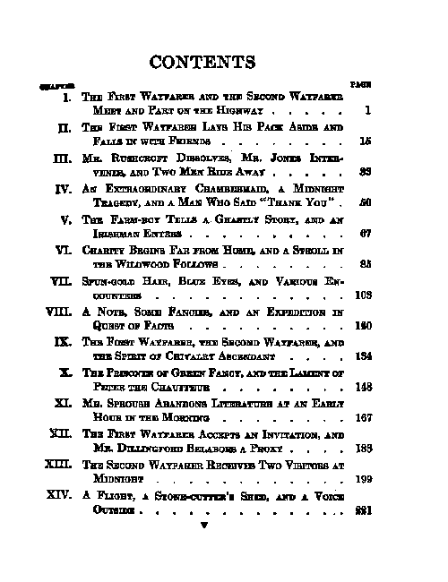
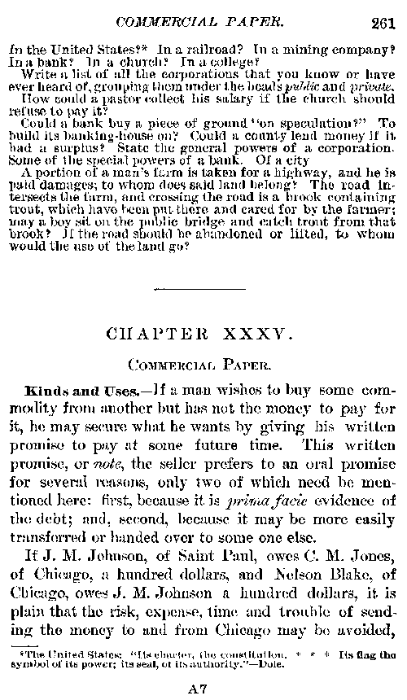
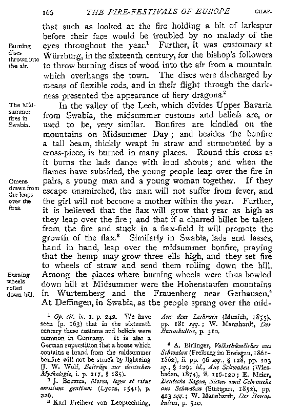

|
|
In doing your proofreading, the primary rule to follow is that the final electronic book seen by a reader, possibly many years in the future, should accurately convey the intent of the author.
So the general rule is "Don't change what the author wrote!". If the author spelled words oddly, leave them spelled that way. If the author wrote outrageous racist or biased statements, leave them that way. If the author seems to put italics or a footnote every third word, leave them italicized or footnoted.
On the other hand, we do change minor printing items that don't affect the sense of what the author wrote. For example, typesetters in the 1700's & 1800's often inserted a ¾ths space before punctuation such as a semicolon or comma. Our OCR scanners generally read this as a space character. When proofreading, we remove that; since it distracts modern readers and removing this space doesn't affect the meaning of the author's words. Typesetters of that time also used the "long s" in words, which looks similar to an "f". In English, the "long s" and the regular "s" are the same, so we make them all the regular "s".
The Summary of Guidelines is a short, 2-page printer-friendly (.pdf) document that summarizes the main points of these Guidelines, and gives examples of how to proofread. Beginning Proofreaders are encouraged to print out this document and keep it handy while proofing.
This document is written in order to resolve formatting differences done by proofreaders on a variety of items; so that we all do formatting the same way. This makes the post-proofreader's work easier and will increase the quality of the books that are created through this site. But it's not intended as any kind of a general editorial or typesetting rulebook.
We've included in this document all the items that new users have asked about formatting while proofreading. If there are any items missing, or items that you consider should be done differently, or if something is vague, please let us know.
This document is a work in progress. Help us to progress by sending in your suggested changes.
On the interface page where you start proofing pages, there is a section called "Project Comments" containing info specific to that project (book). Read these before you start proofing pages! If the Project Manager wants you to format something in this book different than the general rules in these Guidelines, that will be noted here. Instructions in the Project Comments overide the rules in these Guidelines, so follow them. (This is also where the Project Manager gives you interesting tidbits of information about the books, like where the source came from, etc.)
On the interface page where you start proofing pages, on the line "Forum", there is a link titled "Discuss this Project". Clicking on that link will take you to a forum for this specific project. That is the place to ask questions about this book, inform the Project Manager about problems, etc. Using this Forum is the recommended way to communicate with the Project Manager and other proofreaders who are working on this book.
For each book you've worked on, the last 5 pages that you proofed are available from the project page for that book under the heading "My Recently Proofread". If you discover that you made a mistake on a page, or marked something incorrectly, you can click on that page here and re-open it to fix the error. (If it's already gone by, then use the project forum to leave a note for the next round.)
| Formatting of the... |
Leave only the title and author name, since due to Project Gutenberg procedures, that is all that will be put into the title page for final release of the e-book. Remove all references to year, city of publication, publisher, copyright date, etc. Put the title & author name just as the book has it written, whether all capitals, upper & lower case, etc. Older books often show the first letter as a large & ornate graphic--put this as just the letter. (These pages are left in to simplify uploading of the project and for the folder to have the complete book in it for future reference.)
|
Sample Image |
 |
|
Correct Text |
|
GREEN FANCY BY |
Remove all page numbers from the table of contents, along with any ... or *** used to align the page numbers. Due to converting the book to electronic form, the page numbers will be removed from the entire book. Put the Table of Contents items just as printed in the book, whether all capitals, upper & lower case, etc.
|
Sample Image |
|
 |
|
Correct Text |
|
CONTENTS CHAPTER I. THE FIRST WAYFARER AND THE SECOND WAYFARER MEET AND PART ON THE HIGHWAY II. THE FIRST WAYFARER LAYS HIS PACK ASIDE AND FALLS IN WITH FRIENDS III. MR. RUSHCROFT DISSOLVES, MR. JONES INTERVENES, AND TWO MEN RIDE AWAY IV. AN EXTRAORDINARY CHAMBERMAID, A MIDNIGHT TRAGEDY, AND A MAN WHO SAID "THANK YOU" V. THE FARM-BOY TELLS A GHASTLY STORY, AND AN IRISHMAN ENTERS VI. CHARITY BEGINS FAR FROM HOME, AND A STROLL IN THE WILDWOOD FOLLOWS VII. SPUN-GOLD HAIR, BLUE EYES, AND VARIOUS ENCOUNTERS VIII. A NOTE, SOME FANCIES, AND AN EXPEDITION IN QUEST OF FACTS IX. THE FIRST WAYFARER, THE SECOND WAYFARER, AND THE SPIRIT OF CHIVALRY ASCENDANT X. THE PRISONER OF GREEN FANCY, AND THE LAMENT OF PETER THE CHAUFFEUR XI. MR. SPROUSE ABANDONS LITERATURE AT AN EARLY HOUR IN THE MORNING XII. THE FIRST WAYFARER ACCEPTS AN INVITATION, AND MR. DILLINGFORD BELABORS A PROXY XIII. THE SECOND WAYFARER RECEIVES TWO VISITORS AT MIDNIGHT XIV. A FLIGHT, A STONE-CUTTER'S SHED, AND A VOICE OUTSIDE
|
Blank pages may be in the project you are working on due to the original book having a blank page and us trying to cut down on the work needed to find the page, remove it, and renumber the remaining pages. Please put in the text box [Blank Page] if both the text box and the image are blank. If only one of them is blank, follow the directions for a Bad Image or Bad Text.
Remove page headers and page footers (but not footnotes)
from the text. The page headers are normally at the top of the image and have a page
number opposite them. Page headers may be the same all through the book (often the
title of the book and the authors name); they may be the same for each chapter
(often the chapter number); or they may be different on each page (describing the
action on that page). Remove them all, regardless.
A chapter header will start farther down the page and won't
have the page numbers on the same line. Leave chapter headers in--see below.
|
Sample Image |
|  |
|
Correct Text |
|
In the United States? [Footnote: The United States: "Its charter, the constitution. * * * Its flag the symbol of its power; its seal, of its authority."--Dole.] In a railroad? In a mining company? In a bank? In a church? In a college? Write a list of all the corporations that you know or have ever heard of, grouping them under the heads <i>public</i> and <i>private</i>. How could a pastor collect his salary if the church should refuse to pay it? Could a bank buy a piece of ground "on speculation?" To build its banking-house on? Could a county lend money if it had a surplus? State the general powers of a corporation. Some of the special powers of a bank. Of a city. A portion of a man's farm is taken for a highway, and he is paid damages; to whom does said land belong? The road intersects the farm, and crossing the road is a brook containing trout, which have been put there and cared for by the farmer; may a boy sit on the public bridge and catch trout from that brook? If the road should be abandoned or lifted, to whom would the use of the land go? * * * * * CHAPTER XXXV. COMMERCIAL PAPER. KINDS AND USES.--If a man wishes to buy some commodity from another but has not the money to pay for it, he may secure what he wants by giving his written promise to pay at some future time. This written promise, or <i>note</i>, the seller prefers to an oral promise for several reasons, only two of which need be mentioned here: first, because it is <i>prima facie</i> evidence of the debt; and, second, because it may be more easily transferred or handed over to some one else. If J. M. Johnson, of Saint Paul, owes C. M. Jones, of Chicago, a hundred dollars, and Nelson Blake, of Chicago, owes J. M. Johnson a hundred dollars, it is plain that the risk, expense, time and trouble of sending the money to and from Chicago may be avoided, |
Leave chapter headers in the text. A chapter header will start a bit farther down
the page than the page header and won't have the page numbers
on the same line. Chapter Headers are often printed all caps, if so, keep them as
all caps. Include 4 blank lines before the "CHAPTER XXX", and 2 blank lines after,
between it and the chapter description.
Old books often printed the first word of every chapter in all caps, sometimes even
the first word of every paragraph; change these to a normal word (first letter only
capitalized), unless it's bold text.
Watch out for a missing double quote at the start of the first paragraph, which some
publishers did not include or which the OCR missed due to a large capital in the
original. If the author started the paragraph with dialog, insert the double quote,
even if the publisher left it out or used a large capital instead.
|
Sample Image |
 |
|
Correct Text |
|
GREEN FANCY CHAPTER I THE FIRST WAYFARER AND THE SECOND WAYFARER MEET AND PART ON THE HIGHWAY A solitary figure trudged along the narrow road that wound its serpentinous way through the dismal, forbidding depths of the forest: a man who, though weary and footsore, lagged not in his swift, resolute advance. Night was coming on, and with it the no uncertain prospects of storm. Through the foliage that overhung the wretched road, his ever-lifting and apprehensive eye caught sight of the thunder-black, low-lying clouds that swept over the mountain and bore down upon the green, whistling tops of the trees. At a cross-road below he had encountered a small girl driving homeward the cows. She was afraid of the big, strange man with the bundle on his back and the stout walking stick in his hand: to her a remarkable creature who wore "knee pants" and stockings like a boy on Sunday, and hob-nail shoes, and a funny coat with "pleats" and a belt, and a green hat with a feather sticking up from the band. |
Some books will have short descriptions of the paragraph along the side of the text. Move these "Sidenotes" to just above the paragraph that they belong to, surrounded with [Sidenote: the-description-text]. If the paragraph began on a previous page, put the Sidenote at the top of the page and mark if with * so that the post-proofreader can see that it belongs on the previous page. Like this: *[Sidenote: the-description-text]. If there are multiple sidenotes for a single paragraph, put them one after another at the start of the paragraph.
| Sample Image |
Correct Text |
|  |
[Sidenote: The comparative size of the image depends on |
Do not indent the start of paragraphs; instead put a blank line between paragraphs. See the Chapter Headers image/text for an example. (But if all paragraphs are already indented, don't bother removing those spaces--that can be done automatically in post-proofing.)
Break up multiple-column text into a single column. Place the left-most column first and then the next one after it, and so on. You don't need to do anything to mark where the columns were split, just run them all together.
Text for an illustration should be surrounded by [Illustration: the-text]. If there is no text, just place [Illustration] there. If it is in the middle of a paragraph or on the side of a paragraph, move the [Illustration: the-text] to either above or below the paragraph, based on where you can put it without it being in the middle of a paragraph.
|
Sample Image |
 |
|
Correct Text |
|
[Illustration: Martha told him that he had always been her ideal and |
Replace the footnote number, *, dagger, etc. that marks a footnote location with the actual text of the footnote, surrounded by [Footnote: ]. That is, footnotes should be be moved from the bottom of the page to the place on the page where they are referenced in the text. Many proofreaders put a line break before the [Footnote: and another one after the ] that ends the footnote, because this makes it easier for the Second Round Proofer.
If a footnote was a continuation of a footnote from a previous page, move it to the top of the page, surround it with [Footnote: ], and put a * before it. If a footnote continues on the next page, it should be moved to where it is referenced on the page, surrounded by [Footnote: ], and marked with a * at the end of it. If a footnote/endnote is referenced in the text but does not appear on that page, keep the footnote/endnote number or marker and surround it with [Footnote: ] and put a * next to it so the post-proofer can find it. See the Page Headers/Footers image/text for an example footnote.
Footnotes in Poetry or Tables should be put on a separate line at the end of a stanza, or at the end of the poem (just after the closing */), so as not to interrupt the flow of the Author's poetry. The same applies to Footnotes in Tables; put them at the bottom of the table so as not to mess up the table format.
| Original Footnoted Poetry | Proofed Text |
|---|---|
| Mary had a little lamb1 Whose fleece was white as snow And everywhere that Mary went The lamb was sure to go! 1 This lamb was obviously of the Hampshire breed, well known for the pure whiteness of their wool. |
/* Mary had a little lamb [1] Whose fleece was white as snow And everywhere that Mary went The lamb was sure to go! */ [Footnote 1: This lamb was obviously of the Hampshire breed, well known for the pure whiteness of their wool.] |
Endnotes are just footnotes that have been located together at the end of a chapter or at the end of the book, instead of on the bottom of each page. If you are proofing a page with endnotes on it, keep the footnote number, but otherwise mark them just like other footnotes: surrounded by [Footnote: ]. Put a blank line after each one, so that they stay separate paragraphs when the text is reflowed in post-processing.
Text that is italicized should have <i> inserted at the start and
</i> inserted at the end of the italics. (Note the "/" in the closing
symbol.) If the italics start at the top of a page, place a * in front of
the <i> so that the post-proofreader can see if there was more on the
previous page. If the italics go to the bottom of a page, place a * after
the </i> so that the post-proofreader can see if there is more on the
next page.
(Note: either lower-case <i> or upper-case <I> is
OK, whichever you prefer.)
Punctuation goes
OUTSIDE the italics, unless it is an entire sentence or section that is being
italicized. That is not a big deal, but is an answer for those curious.
See the Illustration image for an example of how to do the italics.
Many fonts, especially older ones, used the same design for numbers in both regular and italics. So for dates & similar phrases, just mark the whole phrase as italics, rather than marking the words as italics and the numbers as non-italics. For example:
| Original Text | Correct Text | Over-corrected Text |
|---|---|---|
| Enacted 4 July, 1776 | <i>Enacted 4 July, 1776</i> | <i>Enacted</i> 4 <i>July</i>, 1776 |
Change bold text into all capitals. (Except if it's the first
word of a chapter -- then only capitalize it if it's in bold.) See the Page Headers/Footers image/text for an example.
Do not mark bold text HTML-style (surrounded with <b> and
</b>) unless the Project Manager specifies this method in the Project Comments.
Older books often abbreviated words as contractions, and printed them as
superscripts, for example:
Genrl
Washington defeated Ld Cornwall's army.
Unless the Project Comments specify something else, insert a
single quote (apostrophe) to identify this as an abbreviation/contraction, like
this:
Gen'rl Washington defeated L'd
Cornwall's army.
Only change to the full word if the Project Comments specificly say to do so, like this:
General Washington defeated Lord Cornwall's
army.
Mark as Italics, with <i> and </i>, unless the Project Comments specify something else for this book. Underlining was used to indicate italics when the typesetter was unable to actually italicize the text, for example in a typewritten document.
Don't do anything to mark changes in font size. When the book is converted to electronic form, it will all be plain ASCII text in the same font. The exception to this is when the font size changes to indicate a section of poetry or block quotations; then mark the text as specified for those (/* at the start, */ at the end, with poetry indented 2 spaces, block quotations indented 4 spaces).
If a word or words in the text are printed in all capital letters, leave it that way in your proofed copy. The exception to this is the first word of a chapter or paragraph: many old books put the first word of these in all caps; this should be changed to a normal word (first letter capitalized, the rest lower case).
Unless it really is a hyphenated word like well-meaning, remove the end-of-line hyphenation, and join the two halves of a previously hyphenated word back together. Keep the joined word on the top line, and put a line break after it to preserve the line formatting -- this makes it easier for the 2nd Round Proofreader. See the Chapter Headers image for examples of each kind (nar-row turns into narrow, but low-lying keeps the hyphen). Words like to-day and to-morrow that we don't commonly hyphenate now were often hyphenated in the old books we are working on. Leave them hyphenated the way the author did.
Leave the hyphen at the end of the last line, but mark it with a * after the hyphen so the post-proofer will notice it. On pages that start with part of a word from a previous page, place a * before the word.
Please use two minus signs with no space on either side for the em-dash. For longer dashes, use 4 hyphens (minus signs). There are a few occasions where it is appropriate to leave the spaces, such as when the dash is being used instead of a name or number, as in Mr. B---- or --- Charing Cross Rd. If a dash appears at the start or end of a line of your OCR'd text, join it with the other line so that there are no spaces or line breaks around it. Only if the author used a dash to start or end the paragraph or line of poetry or dialog should you leave it at the start or end of a line.
Hyphens (a single minus sign) should appear in a proofed text only within a hyphenated-word, in a range like 1850-1900, or when actually used as a minus sign, as in -14° or x - y = z.
| Sample Image |
Correct Text |
| |
"She sha--<i>won't!</i>" |
Remove any extra space in contractions, for example: would n't should be wouldn't. (This was an early printers convention, where they retained the space to indicate that 'would' and 'not' were originally separate words. If you see the extra space next to the apostrophe, (wouldn 't) that is probably an OCR scanning issue. Remove the extra space in either case.)
Mark poetry or epigrams so the post-processor can find the poetry quicker. Insert a separate line with /* at the start of the poetry or epigram and a separate line with */ at the end, and then indent each line in between by exactly 2 spaces. If the poetry starts at the beginning of the page put a * before the /* so the post-proofer can check to see if it was continued from the previous page. If it goes to the end of the page put a * after the */ so the post-proofer can check to see if it continues onto the next page.
Don't bother trying to center lines of poetry, even if it was centered on the printed page; that won't work for an e-book viewed with many different screen sizes. Just leave it all indented 2 spaces. (If there is some other indenting that you think is needed to reflect the author's meaning, then try to duplicate the format of the original. Try to start each stanza indented 2 spaces, and then format from there.) But for most poetry, the meaning is in the words and line breaks; indenting format is not critical.
Footnotes in poetry should go at the end of the poem or stanza. See footnotes for details.
| Sample Image |
 |
| Correct Text |
|
/* Pansies, lilies, kingcups, daisies, Let them live upon their praises; Long as there's a sun that sets, Primroses will have their glory; Long as there are violets They will have a place in story; But for flowers my bowls to fill, Give me just the daffodil. */ As Wordsworth ought to have said. |
Leave letters unindented, like you would for paragraphs. Instead of indenting put a blank line before the start of the letter.
Mark tables so the post-processor can find them by surrounding them with /*
and */, like poetry above. Format the table with
spaces to look approximately like the original table. Don't make the table wider
than 70 characters.
It's often hard to format tables in plain ASCII text; just
do your best.
Footnotes in tables should go at the end of the table. See footnotes for details.
These are long quotations (typically several lines) included in a book. They are often printed narrower (wider margins) and in a smaller font size. Mark block quotations so the post-processor can find them by surrounding them with /* and */, like poetry above. Indent each line in the quotation by 4 spaces.
Single spacing around quote marks and punctuation is the correct formatting for the text. Please try to just use the plain " double quote, since the directional double quotes [“ and ”] will have to be replaced to make it ASCII compliant. Do not change single quotes to double quotes. See the Chapter Headers image and text for an example.
Single quotes are used for a variety of purposes. They sometimes are used throughout where current usage would be double quotes--they should be left as printed. They are also used for slang words or shortened versions (contractions). Try to put them the way the image shows them. Last of all, please try to just use the plain ASCII ' single quote (apostrophe) to make it easier for everyone.
Single space after periods (not two spaces). But don't bother to remove double spaces after periods if they're already in the scanned text -- we can do that automatically in post-processing. See the Chapter Headers image and text for an example.
In general, there is no space before punctuation characters (except the opening quote). Books typeset in the 1700's & 1800's often had a partial space inserted before punctuation such as a semicolon or comma. If scanned text has a space before punctuation, remove it.
| Scanned Text | Correct Text |
|---|---|
| and so it goes ; ever and ever. | and so it goes; ever and ever. |
Leave all line breaks in so that the next proofreader can compare the text easily. Especially watch this when fixing hyphenated words. Extra blank lines that are not in the image should be removed. But a blank line at the top or bottom of the page is OK--these are removed automatically in post-processing. (Exceptions: the way we mark text for Footnotes, and for Poetry/Epigrams will sometimes cause extra line breaks.) See the Chapter Headers image and text for an example.
Extra spaces between words are a common OCR error. You don't need to bother removing those spaces--that can be done automatically in post-proofing. But extra spaces around punctuation, em-dashes, quote marks, etc. does need to be removed--that is hard to do automatically.
These are numbers in the margin for each line -- common in older technical books. Remove all such line numbers from the text. Since the text will be reformatted in the e-book version, they will not be helpful.
Some pages will have extra spacing between paragraphs due to "thought breaks",
change in scene, or a bit of suspense. These are intended by the author, so we
preserve them by putting a blank line, 5 *'s indented 7 spaces and then 7 spaces
apart, like so:
end of the line of text.
*
*
*
*
*
Text starts up again.
(The enhanced proofing interface has this separator available to cut
& paste.)
See the Page Headers/Footers
image/text for an example.
Leave a space before the three dots, and a space after. The exception is at the end
of a sentence, when there would be no space, four dots, and a space after. For
example:
That I know ... is true.
This is the end....
Try to put in the proper accented or Non-ASCII characters.
But there is a problem with using accented characters -- they are upper
ASCII, or characters above code 127. This can cause display problems for
any computer not using the Western European character set (MS Windows
codepage 1252 / ISO 8859-1 or -15). Furthermore, Apple never accepted
ISO 8859 and some characters don't match up (a good example is the
curly open quote (0147), which Apple maps to an accented capital O).
Use with caution.
For Windows, there are several ways to get these characters:
| Windows Shortcuts for Upper ASCII symbols | |||||||||||||
|---|---|---|---|---|---|---|---|---|---|---|---|---|---|
| gravè | acuté (égu) | ^circumflex | ~ tilde | ümlaut | ° ring | Æ ligature | |||||||
| à | Alt-0224 | á | Alt-0225 | â | Alt-0226 | ã | Alt-0227 | ä | Alt-0228 | å | Alt-0229 | æ | Alt-0230 † |
| À | Alt-0192 | Á | Alt-0193 | Â | Alt-0194 | Ã | Alt-0195 | Ä | Alt-0196 | Å | Alt-0197 | Æ | Alt-0198 † |
| è | Alt-0232 | é | Alt-0233 | ê | Alt-0234 | ë | Alt-0235 | ||||||
| È | Alt-0200 | É | Alt-0201 | Ê | Alt-0202 | Ë | Alt-0203 | ||||||
| ì | Alt-0236 | í | Alt-0237 | î | Alt-0238 | ï | Alt-0239 | ||||||
| Ì | Alt-0204 | Í | Alt-0205 | Î | Alt-0206 | Ï | Alt-0207 | / slash | Œ ligature | ||||
| ò | Alt-0242 | ó | Alt-0243 | ô | Alt-0244 | õ | Alt-0245 | ö | Alt-0246 | ø | Alt-0248 | œ | Use "oe" † |
| Ò | Alt-0210 | Ó | Alt-0211 | Ô | Alt-0212 | Õ | Alt-0213 | Ö | Alt-0214 | Ø | Alt-0216 | Œ | Use "Oe" † |
| ù | Alt-0249 | ú | Alt-0250 | û | Alt-0251 | ü | Alt-0252 | ||||||
| Ù | Alt-0217 | Ú | Alt-0218 | Û | Alt-0219 | Ü | Alt-0220 | currency | mathematics | ||||
| ÿ | Alt-0255 | ¢ | Alt-0162 | ± | Alt-0177 | ||||||||
| literary | Ÿ | Alt-0159 | £ | Alt-0163 | × | Alt-0215 | |||||||
| çedilla | © | Alt-0169 | ~ tilde | punctuation | ¥ | Alt-0165 | ÷ | Alt-0247 | |||||
| ç | Alt-0231 | ® | Alt-0174 | ñ | Alt-0241 | ¿ | Alt-0191 | € | Alt-0128 | ¬ | Alt-0172 | ||
| Ç | Alt-0199 | ™ | Alt-0153 | Ñ | Alt-0209 | ¡ | Alt-0161 | ° | Alt-0186 | ||||
For Apple Macs, there are also several ways to get these characters:
| Apple Mac Shortcuts for Upper ASCII symbols | |||||||||||||
|---|---|---|---|---|---|---|---|---|---|---|---|---|---|
| gravè | acuté (égu) | ^circumflex | ~ tilde | ümlaut | ° ring | Æligature | |||||||
| à | Opt-~, a | á | Opt-e, a | â | Opt-i, a | ã | Opt-n, a | ä | Opt-u, a | å | Opt-a | æ | Opt-' † |
| À | Opt-~, A | Á | Opt-e, A | Â | Opt-i, A | Ã | Opt-n, A | Ä | Opt-u, A | Å | Opt-A | Æ | Opt-" † |
| è | Opt-~, e | é | Opt-e, e | ê | Opt-i, e | ë | Opt-u, e | ||||||
| È | Opt-~, E | É | Opt-e, E | Ê | Opt-i, E | Ë | Opt-u, E | ||||||
| ì | Opt-~, i | í | Opt-e, i | î | Opt-i, i | ï | Opt-u, i | ||||||
| Ì | Opt-~, I | Í | Opt-e, I | Î | Opt-i, I | Ï | Opt-u, I | / slash | Œ ligature | ||||
| ò | Opt-~, o | ó | Opt-e, o | ô | Opt-i, o | õ | Opt-n, o | ö | Opt-u, o | ø | Opt-o | œ | Use "oe" † |
| Ò | Opt-~, O | Ó | Opt-e, O | Ô | Opt-i, O | Õ | Opt-n, O | Ö | Opt-u, O | Ø | Opt-O | Œ | Use "Oe" † |
| ù | Opt-~, u | ú | Opt-e, u | û | Opt-i, u | ü | Opt-u, u | ||||||
| Ù | Opt-~, U | Ú | Opt-e, U | Û | Opt-i, U | Ü | Opt-u, U | currency | mathematics | ||||
| ÿ | Opt-u, y | ¢ | Opt-4 | ± | Opt-+ | ||||||||
| literary | Ÿ | Opt-u, Y | £ | Opt-3 | × | Opt-V | |||||||
| çedilla | © | Opt-g | ~ tilde | punctuation | ¥ | Opt-y | ÷ | Opt-/ | |||||
| ç | Opt-c | ® | Opt-r | ñ | Opt-n, n | ¿ | Opt-? | € | Opt-@ | ¬ | Opt-l | ||
| Ç | Opt-C | ™ | Opt-2 | Ñ | Opt-n, N | ¡ | Opt-1 | ° | Opt-* | ||||
For text printed in non-english characters; that is, characters other than the Latin A...Z characters, for example Greek, Cyrillic (used in Russian & other Slavic languages), Hebrew, or Arabic characters, there are two ways to deal with these.
The simplest way is just to mark it, and leave it for the post-proofer to deal with. To do this, just surround the text with [Greek: **], [Cyrillic: **], [Hebrew: **], or [Arabic: **] and leave it as scanned. Include the ** so the post-proofer can deal with it later.
The second method is more work, but provides a more accurate text. This involves converting each character of the foreign text into the equivalent ASCII Latin letter(s). This mainly means looking up each character in the tables listed below, and substituting them.
For fractions, convert them like this: 2½ becomes 2-1/2.
Some non-fiction works will reference themselves by giving a page number to go to, for example: (see p. 123). Please leave these references that are within the text (even though we remove page numbers from the Table of Contents & Index pages). Do not mark these with a * either, unless the Project Manager specifies this in the Project Comments.
Remove all page numbers from index pages, along with any ... or *** used to align the page numbers. You can leave any trailing commas or semicolons. (When the book is converted to electronic form, there will no longer be any 'pages' in the book, so page numbers are not useful. Some Project Managers prefer to remove the index pages entirely because of this -- if so, they will tell you this in the Project Comments. Other PM's leave index pages, as they are an indication of what the author thought important enough to list. Include index pages unless told otherwise.)
For sub-topic listings in an index, start each one on a new line, indented 2 spaces.
For example:
Hooker, Jos., maj. gen. U. S. V.,
assigned to command Porter's corps;
afterwards, McDowell's;
in pursuit of Lee;
at South Mt.;
unacceptable to Halleck, retires from active service.
Hopkins, Henry H.,
notorious secessionist in Kanawha valley;
controversy with Gen. Cox over escaped slave.
Hosea, Lewis M.,
capt. on Gen. Wilson's staff,
Old books sometimes printed the first word of each letter in the index in all caps; change this to a normal word (first letter only capitalized), unless it's bold text.
Don't bother putting spaces at the ends of lines of text. Waste of your time for something that we can take care of automatically later. Similarly don't waste time taking out extra spaces at the ends of lines.
Mark all actor names in italics if they are Italics in the original text, mark them as bold if they are Bold in the original text. And Stage Notes too: format them like they are in the original text.
If you run into something that isn't covered in these guidelines that you think needs special handling, put an asterisk (*) next to it in your proofed text. (You can also put a note there explaining the problem.) This signals the post-proofer to stop and examine this text & the matching image, and deal with it. This does slow down the post-proof processing of this text, so don't do this unless you are sure that it is needed.
OCR scanners commonly have trouble distinguishing between the digit one (1), the lowercase letter l, and the uppercase letter I. This is especially true for some of our older books where the pages may be in poor condition. Watch out for these. Read the context of the sentence to determine which is the correct character, but be careful--often your mind will automatically 'correct' these when you are reading.
OCR scanners often have trouble with dashes & hyphens, so watch for these. The rule is to use one hyphen (minus sign) for a hyphenated-word; use 2 hyphens for a longer dash (Em-dash). And no spaces around either one. OCR'd text often has only one hyphen for a dash that should have 2.
[...more to be added...]
Do not include handwritten notes in a book, unless it is impossible to read the text that the handwritten note is replacing.
If an image is bad (not loading, chopped off, unable to be read), please put a post about this bad image in the project comments forum. Do not click on "Quit without Saving"; if you do, the next person will get that page. Click on your back button to the project listing page or go back to http://texts01.archive.org/dp/tools/proofers/proof_per.php until we create a better method in the coming weeks.
It's fairly common for the image to be good, but the OCR scan is missing the first line or two of the text. Please just type in the missing line(s). If nearly all of the lines are missing in the scan, then either type in the whole page (if you are willing to do that), or just click on the "Quit without Saving" button and the page will be reissued to someone else. If there are several pages like this, you might post a note in the project comments forum to notify the Project Manager.
If there is a wrong image for the text given, please put a post about this bad image in the project comments forum. Do not click on "Quit without Saving"; if you do, the next person will get that page. Click on your back button to the project listing page or go back to http://texts01.archive.org/dp/tools/proofers/proof_per.php until we create a better method in the coming weeks.
If the previous proofreader made a lot of mistakes or missed a lot of things, you
can send them a message by clicking on their name. That will allow you to send them
a private forum message. Please be nice! These are people volunteering
their help, usually trying their best. The point of the message should be to inform
them of the correct way to do proofing, rather than criticize them as incompetent,
careless, etc.
(If the previous proofreader did an outstanding job, you can
also send them a message about that.)
Due to printer errors, there can be some misspellings. If you believe these to be true printer errors, then you should fix them. Some may be due to differences in spelling of words from a long time ago. Do not try to correct those to modern English.
In general, don't correct factual errors in the author's book. Many of the books we are proofing have statements of fact in them that we no longer accept as accurate. Leave them as the author wrote them.
A possible exception is in technical or scientific books, where a known formula or equation may be given incorrectly. (Especially if it is shown correctly on other pages of the book.) Notify the Project Manager about these, either by sending them a message via the Forum, or by inserting [sic* explain-your-concern] at that point in the text.
[...to be completed...]